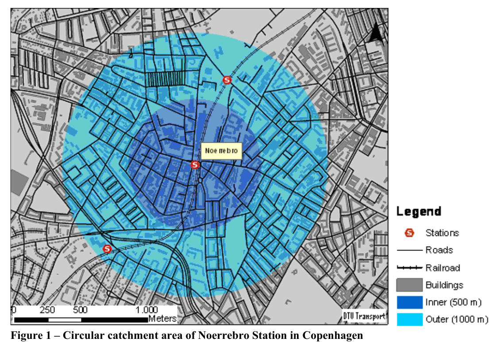
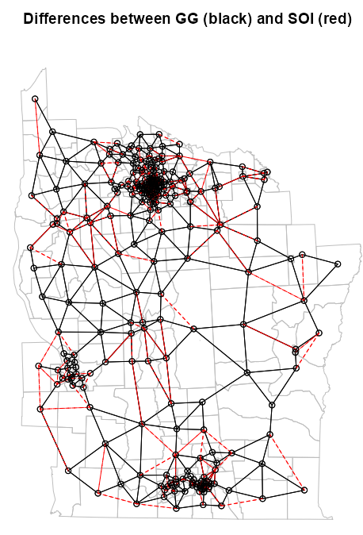
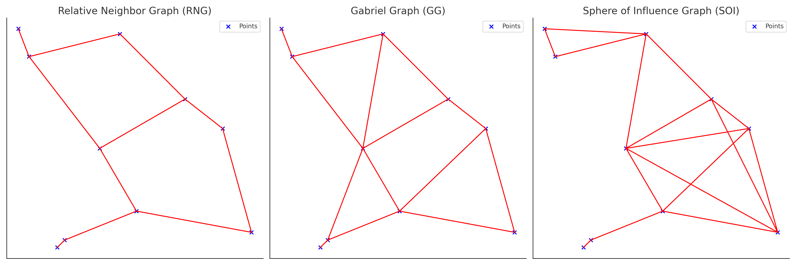
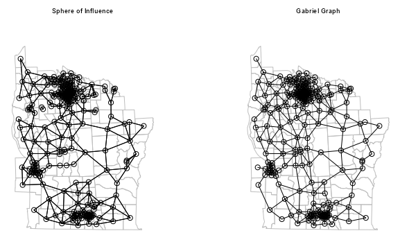

Analysis
Misc
- Also see
- Domain Knowledge >> Epidemiology >> Disease Mapping
- Mathematics, Statistics >> Multivariate >> Depth
- Outlier detection and robust mean calculation for multivariate geospatial and spatio-temperal data
- Boundary Analysis
- The assessment of whether significant geographic boundaries are present and whether the boundaries of multiple variables are spatially correlated.
- Notes from BoundaryStats: An R package to calculate boundary overlap statistics
- Packages
- {BoundaryStats} - Functions for boundary and boundary overlap statistics
- Boundaries are areas in which spatially distributed variables (e.g., bird plumage coloration, disease prevalence, annual rainfall) rapidly change over a narrow space.
- Boundary Statistics
- The length of the longest boundary
- The number of cohesive boundaries on the landscape
- Boundary Overlap Statistics
- The amount of direct overlap between boundaries in variables \(A\) and \(B\)
- The mean minimum distance between boundaries in \(A\) and \(B\) (i.e. minimums are measured within \(A\))
- For instance, the minimum distance between \(\text{boundary}_{A,i}\) and \(\text{boundary}_{A,j}\)
- The mean minimum distance from boundaries in \(A\) to boundaries in \(B\)
- Use Cases
- By identifying significant cohesive boundaries, researchers can delineate relevant geographic sampling units (e.g., populations as conservation units for a species or human communities with increased disease risk).
- Associations between the spatial boundaries of two variables can be useful in assessing the extent to which an underlying landscape variable drives the spatial distribution of a dependent variable.
- Identifying neighborhood effects on public health outcomes, including COVID-19 infection risk or spatial relationships between high pollutant density and increased disease risk.
Terms
- Areal (aka Lattice) Data - Arise when a study region is partitioned into a limited number of areas, with outcomes being aggregated or summarized within those areas
- Buffer - a zone around a geographic feature containing locations that are within a specified distance of that feature, the buffer zone. A buffer is likely the most commonly used tool within the proximity analysis methods. Buffers are usually used to delineate protected zones around features or to show areas of influence.
- Catchment - The area inside any given polygon is closer to that polygon’s point than any other. Refers to the area of influence from which a retail location, such as a shopping center, or service, such as a hospital, is likely to draw its customers. (also see Retail >> Catchment)
- Spatial Functional Data - Data comprising curves or functions that are recorded at each spatial location.
Proximity Analysis
- Example: Basic Workflow
Data: Labels, Latitude, and Longitude
Create Simple Features (sf) Object
customer_sf <- customer_table %>% sf::st_as_sf(coords = c("longitude", "latitude"), crs = 4326)- Merges the longitude and latitude columns into a geometry column and transforms the coordinates in that column according to projection (e.g.
crs = 4326)
- Merges the longitude and latitude columns into a geometry column and transforms the coordinates in that column according to projection (e.g.
View points on a map
mapview::mapview(customer_sf)Create Buffer Zones
customer_buffers <- customer_sf %>% sf::st_transform(26914) %>% sf::st_buffer(5000) mapview::mapview(customer_buffers)- Most of projections use meters, and based on the size of the circles as related to the size of Denton, TX, I’m guessing the radius of each circle is 5000m. Although, that still looks a little small.
Create Isochrones
customer_drivetimes <- customer_sf %>% mapboxapi::mb_isochrone(time = 10, profile = "driving", id_column = "name") mapview::mapview(customer_drivetimes)- 10 minutes drive-time from each location
- time (minutes): The maximum time supported is 60 minutes. Reflects traffic conditions for the date and time at which the function is called.
- If reproducibility of isochrones is required, supply an argument to the depart_at argument.
- depart_at: Specifying a time makes it a time-aware isochrone. Useful for modeling peak business hours or rush hour traffic, etc.
- e.g. Adding depart_at = “2024-01-27T17:30” to the isochrone above gives you a 10-minute driving isochrone with predicted traffic at 5:30pm tomorrow
Add Demographic Data
denton_income <- tidycensus::get_acs( geography = "tract", variables = "B19013_001", state = "TX", county = "Denton", geometry = TRUE ) %>% select(tract_income = estimate) %>% sf::st_transform(st_crs(customer_sf)) customers_with_income <- customer_sf %>% sf::st_join(denton_income) customers_with_incomeAdds median income estimate according to the census tract each person lives in.
Joins on the geometry variable
- Circular Buffer Approach
- Notes from GIS-based Approaches to Catchment Area Analyses of Mass Transit
- The simplest and most common used approach to make catchment areas of a location is to consider the Euclidean distance from the location.
- Due to limitations (See below), it’s best suited for overall analyses of catchment areas.
- Often the level of detail in the method has been increased by dividing the catchment area into different rings depending on the distance to the station.
- Example: By applying weights for each ring it is possible to take into account that the expected share of potential travelers at a train station will drop when the distance to the stop is increased.

- Example: By applying weights for each ring it is possible to take into account that the expected share of potential travelers at a train station will drop when the distance to the stop is increased.
- Limitation: Does not take the geographical surroundings into account.
- Example: In most cases, the actual walking distance to/from a location is longer than the Euclidean distance since there are natural barriers like rivers, buildings, rail tracks etc.
- This limitation is often coped with by applying a detour factor that reduces the buffer distance to compensate for the longer walking distance.
- However, in cases where the length of the detours varies considerably within the location’s surroundings, this solution is not very precise.
- Furthermore, areas that are separated completely from a location, e.g. by rivers, might still be considered as part of the location’s catchment area
- Example: In most cases, the actual walking distance to/from a location is longer than the Euclidean distance since there are natural barriers like rivers, buildings, rail tracks etc.
- Use Case: Ascertain Travel Potential to Determine Potential Station Locations
Every 50m along the proposed transit line, calculate the travel potential for that buffer area
- Using the travel demand data for that buffer area, calculate travel potential
Travel Potential Graph
- Left side represents the transit line.
- Right Side
- Y-Axis are locations where buffer areas were created.
- X-Axis: Travel Potential
- Not sure if that is just smoothed line with a point estimate of Travel Potential at each location or how exactly those values are calculated.
- 50m isn’t a large distance so maybe all the locations aren’t shown on the Y-Axis and the number of calculations produces an already, mostly, smooth line on it’s own.
- Partitioning a buffer zone into rings or some kind of interpolation could provided more granular estimates around the central buffer location.
- Not sure if that is just smoothed line with a point estimate of Travel Potential at each location or how exactly those values are calculated.
{kind=link}
{kind=link}
{kind=link}
{kind=link}
{kind=link}
{kind=link}
{kind=link}
Spatial Weights
- Misc
- Notes from {spdep} vignettes and its docs.
- Packages
- {spdep} - Spatial Dependence: Weighting Schemes, Statistics
- Workflows
- Possibly include plotting differences to compare neighbor algorithms to see which best aligns with analysis goals, and testing symmetry and disjointedness of the results. (See Diagnostics, Geospatial)
- Graph-based
- Create a points list object (e.g.
st_centroid) \(\rightarrow\) Fit neighbors algorithm (e.g.gabrielneigh) \(\rightarrow\) Convert to neighbors list (e.g.graph2nb) \(\rightarrow\) Add spatial weights (e.g.nb2listw)- Also see Geospatial, Preprocessing >> sf >> Points in Polygons
- Create a points list object (e.g.
- Distance-based
- Create a points list object (e.g.
st_centroid) \(\rightarrow\) Add back CRS specification to convert to geographical coordinates (e.g.st_transform,st_set_crs) \(\rightarrow\) Fit neighbors algorithm (e.g.knearneigh) \(\rightarrow\) Convert to neighbors list (e.g.knn2nb) \(\rightarrow\) Add spatial weights (e.g.nb2listw)- Alternatively if you have latitude and longitude columns, convert to sf object via
st_as_sfinstead of creating a points list object (See Geospatial, Preprocessing >> Projections) - The conversion to geographical coordinates isn’t necessary but the distances are more accurated than planar distances.
- Alternatively if you have latitude and longitude columns, convert to sf object via
- Create a points list object (e.g.
- Polygon-based (aka Contiguity-based)
- Make sure you have sf object or list of SpatialPolygon objects \(\rightarrow\) Create neighbors list via
poly2nb\(\rightarrow\) Add spatial weights (e.g.nb2listw)
- Make sure you have sf object or list of SpatialPolygon objects \(\rightarrow\) Create neighbors list via
- Plot differences between neighbor algorithms
It can be difficult to compare algorithms, so this helps make the differences more discernable.
Example: From Example: SOI and GG
# diffnb doesn't handle directed graphs NY85_nb_gg <- graph2nb(gabrielneigh(coords = NY8_ct_sf), sym = TRUE) diffs <- diffnb(NY85_nb_soi, NY85_nb_gg) plot(st_geometry(NY8_sf), border = "gray", reset = FALSE, main = "Differences between GG (black) and SOI (red)") plot(NY85_nb_gg, coords = coords_ct, add = TRUE) plot(diffs, coords = coords_ct, add = TRUE, col = "red", lty = 2)diffnbcurrently doesn’t handle directed graphs. So, make sure to check the symmetry of your graphs withis.symmetric.nbbeforehand. Then, set sym = TRUE in the neighbor list function if they aren’t symmetric.- Symmetrizing the graph adds links, so this should be a slightly inaccurate depiction of the differences between the algortihms. At least in this case though, it looks good enough.
- Neighbors Lists
- Just about everything gets converted to a neighbor list of some sort at the end (e.g. adding spatial weights, moran’s test, plotting)
editcan be used to interactively add links (e.g. not detected erroneously) or remove links (e.g. mountain range separates boundaries).- Types of Neighbor Lists
cell2nb- Takes regular, flat, square grids (via ncols, nrows) as inputs- type = rook (default)(shared edge) or queen (shared edge or vertex)
- torus = TRUE: The grid is mapped onto a torus, removing edge effects.
graph2nb- Takes a graph-based neighbor object- sym = FALSE says don’t add links to create symmetry
- No symmetry means if node A is a neighbor of node B, that doesn’t necessarily mean that node B is a neighbor of node A
- sym = TRUE will insert links to restore symmetry, but the graphs then no longer exactly fulfil their neighbour criteria.
- sym = FALSE says don’t add links to create symmetry
grid2nb- Takes GridTopology class object (?)- Maybe these are like H3 hexagonal grids
knn2nb- Takes a k-NN object- sym = FALSE says don’t add links to create symmetry
- No symmetry means if node A is a neighbor of node B, that doesn’t necessarily mean that node B is a neighbor of node A
- In the overwhelming majority of cases, k-NN leads to asymmetric neighbours
is.symmetric.nbcan be used to check for symmetry
- sym = FALSE says don’t add links to create symmetry
poly2nb- Takes a sf object with (multi-)polygons or a list of polygon objects with class SpatialPolygon- Builds a neighbours list based on regions with contiguous boundaries, that is sharing one or more boundary point.
- snap allows the shared boundary points to be a short distance from one another.
- e.g. A narrow body of water separates the boundaries where there’s a ferry or a bridge that could in essence make the boundaries contiguous.
- Sometimes there are geographical artefacts present which screw up the algorithm detecting continguous boundaries. By increasing the snap value, you can absorb the artefacts and detect the contiguous boundary between the shapes.
- There is also an
editfunction to interactively add missing neighbor links.
- There is also an
- Defaults
- For SpatialPolygons objects and sf objects with no coordinate reference system, it’s 1.490116e-08 whichs is
sqrt(.Machine$double.eps) - For sf objecst with coordinate reference systems, it’s 1e-7 (approx 10mm) that’s converted to units of the coordinate system.
- For SpatialPolygons objects and sf objects with no coordinate reference system, it’s 1.490116e-08 whichs is
- If queen = TRUE, then when three or more polygons meet at a single point, they all meet the contiguity condition, giving rise to crossed links.
- If queen = FALSE, (aka rook), at least two boundary points must be within the snap distance of each other
tri2nb- Takes a coordinates matrix (e.g. centroids) and is the input forsoi.graph
- Spatial Weights
- A spatial weights matrix defines how closely related each pair of nodes are
nb2listwwill add spatial weights to your neighbors listnb2listwdist- Supplementsnb2listwwith additional options- Defaults: type = “idw”, alpha = 1, style = “raw” (i.e. no normalization)
- If both type and style are specified, I’d guess that normalization is applied to the weights and not the distances. (i.e. first type applied, then style)
- Types
- Inverse Distance Weighting (IDW)
\[w_{ij} = d_{ij}^{-\alpha}\]- IDW weights show extreme behaviour close to 0 and can take on the value infinity. In such cases, the infinite values are replaced by the largest finite weight present in the weights list.
- Double-Power Distance Weights
\[w_{ij} = e^{-\alpha \cdot d_{ij}}\] - Exponential Distance Decay
\[w_{ij} = \left[1 - \left(\frac{d_{ij}}{d_{\textrm{max}}}\right)^{\alpha}\right]^{\alpha}\]
- Inverse Distance Weighting (IDW)
- Normalization Styles
- Row-Standardized (W)
- Each row is standardized to sum to 1
- All the values describing a node’s relationship to each other node will sum to 1
- Each weight has had its raw value divided by the sum of the row.
- Most popular as it makes results comparable, i.e. one node’s set of relationships is comparable to another node’s set of relationships (rows)
- Best when the number of neighbors for each node can vary significantly.
- Example: Analyzing how house prices are influenced by neighboring houses in a suburban area. The number of neighboring houses isn’t what primarily influences a house’s value, it’s the local houses themeselves.
- Example: k-NN w/k=2
\[ \begin{array}{c|cccc} & A & B & C & D \\ \hline A & 0 & 0.66 & 0.34 & 0 \\ B & 0.50 & 0 & 0.50 & 0 \\ C & 0 & 0.61 & 0 & 0.39 \\ D & 0 & 0.28 & 0.72 & 0 \end{array} \]
- Each row is standardized to sum to 1
- Binary (B)
- Neighbor/Not Neighbor (1/0)
- Ignores strength of connection
- Example: Studying an invasive species. It only matters whether the species is able to or not able to invade another node.
- Globally Standardized (C)
- All cells in the matrix are standardized to sum to 1
- Accounts for global pattern
- Example: Investingating voting patterns in densely populated districts vs. sparsely populated districts in a state or region. Here you want the total influence to be standardized across the entire state or region.
- Unstandardized (U)
- Just uses raw weight values (e.g. distances)
- Good when actual distances matter and not the relative distances
- Preserves absolute differences
- Problematic if distances vary greatly
- Example: Modeling air pollution dispersion from industrial sites. It’s a physical phenomenon saw distances matter as pollution concentration could decay exponentiall with distance from the site.
- Variance-Stabilizing
- Each raw weight is divided by square root of row sums
- More robust to outliers or extreme values
- Example: Analyzing disease clusters in areas with very uneven population density. Variance stabilization helps prevent false positives in dense areas
- Min/Max
- Divides the weights by the minimum of the maximum row sums and maximum column sums of the input weights
- Similar to U and C styles
- Row-Standardized (W)
- Graph-based
Misc
- No option to use Great Circle distances for geographical coordinates, only Euclidean distance (planar)
- All the graph-based neighbour schemes always ensure that all the points will have at least one neighbour.
Relative Neighbor Graph (RNG)
\[ d(x,y) \le \min\{\;\max\{d(x,z),d(y,z)\}\;|\; z \in S\;\} \]
- Neighbors are defined such that two points \(x\) and \(y\) are connected if the direct distance \(d(x,y)\) is less than or equal to the minimum of the maximum distances from \(x\) and \(y\) to any third point \(z \in S\)
- Does Not guarantee symmetry
Gabriel Graph (GG)
\[ d(x,y) \le \min\{(d(x,z)^2 + d(y,z)^2)^{1/2} \;|\;z \in S\} \]
- Neighbors \(x\) and \(y\) are connected if the distance \(d(x, y)\) is less than or equal to the square root of the summ of squared distances from \(x\) and \(y\) to any third point \(z \in S\)
- Does NOT guarantee symmetry
Sphere of Influence Graph (SOI)
- For a point set \(S\), \(x\) and \(y\) are connected if their respective “spheres of influence” (circles centered at \(x\) and \(y\) with radii equal to the distance to their nearest neighbors) intersect in at least two places
- Guarantees symmetry
Hierarchical Relationship: RNG \(\subseteq\) GG \(\subseteq\) SOI
- All the connections made by RNG will be made by GG, and all the connections made by GG will be made by SOI
- RNG is the most restrictive while SOI is the least.
Example: SOI and GG (source)
library(spdep) library(sf) library(dbscan) NY8_sf <- st_read(system.file( "shapes/NY8_bna_utm18.gpkg", package = "spData"), quiet = TRUE) # validate geometries table(st_is_valid(NY8_sf)) #> TRUE #> 281 # calculate centroids in counties that will be nodes NY8_ct_sf <- st_centroid(st_geometry(NY8_sf), of_largest_polygon = TRUE) class(NY8_ct_sf) #> [1] "sfc_POINT" "sfc" coords_ct <- st_coordinates(NY8_ct_sf) class(coords_ct) #> [1] "matrix" "array" # convert point list to neighbor list NY84_nb <- tri2nb(coords = NY8_ct_sf) # fit the soi graph and convert graph obj to a neighbor list NY85_nb_soi <- graph2nb(soi.graph(tri.nb = NY84_nb, coords = NY8_ct_sf)) NY85_nb_gg <- graph2nb(gabrielneigh(coords = NY8_ct_sf)) par(mfrow = c(1, 2)) plot(st_geometry(NY8_sf), border = "gray") plot(NY85_nb_soi, coords = coords_ct, add = TRUE) title(main = "Sphere of Influence", cex.main = 0.6) # plot boundaries plot(st_geometry(NY8_sf), border = "gray") # plot edges and nodes plot(NY85_nb_gg, coords = coords_ct, add = TRUE) title(main = "Gabriel Graph", cex.main = 0.6)- I thought the difference would be more apparent between the two methods, but they’re pretty similar.
- I feel the GG graph is more connected overall, but the SOI is more connected in areas where the nodes are denser.
- There are two neighbor list conversions:
tri2nbreturns a special list required as input forsoi.graph. Also, I think {dbscan} is required forsoi.graphbut maybe not the others.graph2nbconverts a graph object to a neighbor list that’s used for graphing the network
- The RNG method (
relativeneigh) is fit the same way as the GG method.
- k-NN
-
NY88_nb_sf <- knn2nb(knearneigh(NY8_ct_sf, k = 4)) # plot boundaries plot(st_geometry(NY8_sf), border="gray") # plot edges and nodes plot(NY88_nb_sf, coords = coords_ct, add = TRUE) title(main="K nearest neighbours, k = 4")See Graph-based >> Example for code for NY8_sf, NY8_ct_sf, and coords_ct
- Where NY8_ct_sf is a point list of county centroids and coords_ct is the same thing but in a point matrix
knn2nbcoverts the knn graph object to a neighbor list for graphingIf longlat = TRUE, Great Circle distances in kilometers are used
# Also add crs back county centroids NY8_ct_ll <- st_transform(NY8_ct_sf, "OGC:CRS84") st_is_longlat(NY8_ct_ll) #> [1] TRUEFor larger datasets, changing the engine to S2 and spherical distances can be an acceptable compromise between accuracy and speed
sf_use_s2(TRUE) pts_ll1_nb <- knn2nb(knearneigh(NY8_ct_ll, k = 4))
-
- Distance Neighbors
Identifies neighbors within a euclidean (default) distance range using a k-NN graph
- So, if upper threshold is a fraction (e.g. 75%) of the max edge distance, then more connections will be made.
- This fraction could correspond to a “reasonable” walking or driving distance if you’re studying neighborhood effects.
-
dsts <- unlist(nbdists(nb = NY88_nb_sf, coords = NY8_ct_sf)) max_1nn <- max(dsts) max_1nn #> [1] 26564.68 NY810_nb <- dnearneigh(NY8_ct_sf, d1 = 0, d2 = 0.75 * max_1nn) # plot boundaries plot(st_geometry(NY8_sf), border="grey", reset=FALSE, main = paste0("Distance based neighbours 0-", format(max_1nn)) ) # plot edges and nodes plot(NY810_nb, coords_ct, add = TRUE)nbdistsreturns the Euclidean distances along the connections of k-NN graph- Where NY88_nb_sf is the neighbor list of the k-NN graph object (see k-NN example) and NY8_ct_sf and coords_ct are the point list and point matrix of county centroids respectively (see Graph-based example)
- The max of these distances is 26,564.68 meters or 26.6 km
- The 75th percentile of the max of those distances is used as the upper threshold for the distance neighbors algorithm.
- If longlat = TRUE, then Great Circle distance in kilometers is used
- See below the k-NN example for switching centroids to geographical coordinates
- If x is an “sf” object and use_s2 = TRUE, spherical distances in kilometers are used.
- See this vignette section for a discussion on this setting
{kind=link}
{kind=link}
{kind=link}
{kind=link}
{kind=link}